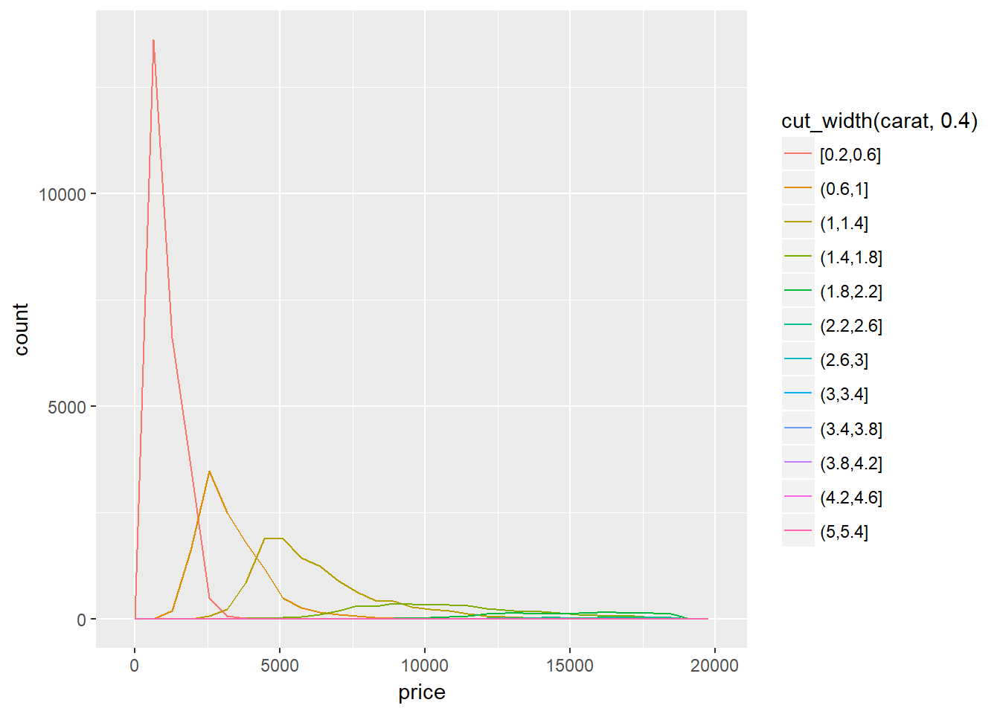

7 Exploratory Data Analysis
7.1 Introduction
No exercises.
7.2 Questions
No exercises.
7.3 Variation
7.3.1 Exercises
1 - Explore the distribution of each of the x, y, and z variables in diamonds. What do you learn? Think about a diamond and how you might decide which dimension is the length, width, and depth.
library(tidyverse)The description of x, y, and z variables are given in ?diamonds. We can still explore the distributions of these three dimensions. One option is to use geom_histogram(). Another option is to use geom_density(), which is a smoothed version of the histogram. Here we will use geom_density() along with geom_rug(), which shows a 1-dimensional distribution at the bottom.
ggplot(data = diamonds, mapping = aes(x = x)) +
geom_density() +
geom_rug() +
labs(title = 'Distribution of x(length)')ggplot(data = diamonds, mapping = aes(x = y)) +
geom_density() +
geom_rug() +
labs(title = 'Distribution of y(width)')ggplot(data = diamonds, mapping = aes(x = z)) +
geom_density() +
geom_rug() +
labs(title = 'Distribution of z(depth)')We see that in general, there are more smaller diamonds than bigger ones. Also in y and z dimensions, there are outliers. They could be errros or real diamonds that are exceptionally large.
2 - Explore the distribution of price. Do you discover anything unusual or surprising? (Hint: Carefully think about the binwidth and make sure you try a wide range of values.)
Setting the binwidth to 20, we can see that the price distribution is right-skewed and has many ‘spikes’. Most of the diamonds are under 1,000, and interestingly and unusally there are no dimaonds in the price range of around 1,500. There is also an increase in the number of diamonds in the price range of raound 4,500.
ggplot(data = diamonds) +
geom_histogram(mapping = aes(x = price), binwidth = 20)3 - How many diamonds are 0.99 carat? How many are 1 carat? What do you think is the cause of the difference?
diamonds %>% filter(between(carat, .96, 1.05)) %>%
group_by(carat) %>% summarize(count = n())## # A tibble: 10 x 2
## carat count
## <dbl> <int>
## 1 0.960 103
## 2 0.970 59
## 3 0.980 31
## 4 0.990 23
## 5 1.00 1558
## 6 1.01 2242
## 7 1.02 883
## 8 1.03 523
## 9 1.04 475
## 10 1.05 361I am no diamond expert, but the data shows that there are way more 1ct diamonds than .99ct diamonds. (It could be the tendency of humans to report rounded numbers.)
4 - Compare and contrast coord_cartesian() vs xlim() or ylim() when zooming in on a histogram. What happens if you leave binwidth unset? What happens if you try and zoom so only half a bar shows?
Let’s compare the difference between the functions when we set the x limits to 0 and 5000 and y limits to 0 and 700. We use the same histogram from the last question and leave the binwidth to 20.
Using coord_cartesian:
ggplot(data = diamonds) +
geom_histogram(mapping = aes(x = price), binwidth = 20) +
coord_cartesian(xlim = c(0,5000), ylim = c(0,700))One thing to notice that even the x and y limit are set to 5000 and 700 respectively, some data beyond those limits are still being shown. We can override this behavior with expand = FALSE.
xlim() and ylim():
ggplot(data = diamonds) +
geom_histogram(mapping = aes(x = price), binwidth = 20) +
xlim(c(0,5000)) +
ylim(c(0,700))## Warning: Removed 14714 rows containing non-finite values (stat_bin).## Warning: Removed 1 rows containing missing values (geom_bar).With xlim() and ylim(), data that are outside of the limits are not shown. It’s fine with the x axis, but do notice that there is a missing bin at around $700. For that particular bin, the height is beyond the y limit of 700.
7.4 Missing values
7.4.1 Exercises
1 - What happens to missing values in a histogram? What happens to missing values in a bar chart? Why is there a difference?
In geom_histogram(), the missing values are removed.
data.frame(value = c(NA, NA, NA, rnorm(1000,0,1))) %>% ggplot() +
geom_histogram(mapping = aes(x = value), bins = 50)## Warning: Removed 3 rows containing non-finite values (stat_bin).In geom_bar(), the missing values are counted and treated as a category.
ggplot(data = data.frame(type = c('A','A','B','B','B',NA))) +
geom_bar(mapping = aes(x = type))The reason for the difference is that essentially, histograms are used for displaying continuous variables, while bar charts are used for visualizing categorical variables.
2 - What does na.rm = TRUE do in mean() and sum()?
If there are missing values in the vector, mean() and sum() will return NA. By including na.rm = TRUE, mean() and sum() will return the average and sum based on the non-missing values in the vector. For example:
mean(c(1,2,3,NA,4), na.rm = TRUE)## [1] 2.57.5 Covariation
7.5.1 A categorical and continuous variable
7.5.1.1 Exercises
1 - Use what you’ve learned to improve the visualisation of the departure times of cancelled vs. non-cancelled flights.
The problem with the original visualisation of the departure times of cancelled vs. non-cancelled flights is that since there are far less cancelled flights, the distribution of non-cancelled flights looks flat when plotted together with non-cancelled flights.
We can use freq_density() to force the area under each curve sums up to 1.
nycflights13::flights %>%
mutate(
cancelled = is.na(dep_time),
sched_hour = sched_dep_time %/% 100,
sched_min = sched_dep_time %% 100,
sched_dep_time = sched_hour + sched_min / 60
) %>%
ggplot(mapping = aes(sched_dep_time)) +
geom_density(mapping = aes(colour = cancelled))Or we can use geom_boxplot().
nycflights13::flights %>%
mutate(
cancelled = is.na(dep_time),
sched_hour = sched_dep_time %/% 100,
sched_min = sched_dep_time %% 100,
sched_dep_time = sched_hour + sched_min / 60
) %>%
ggplot() +
geom_boxplot(mapping = aes(x = cancelled, y = sched_dep_time))2 - What variable in the diamonds dataset is most important for predicting the price of a diamond? How is that variable correlated with cut? Why does the combination of those two relationships lead to lower quality diamonds being more expensive?
Since cut, color, and clarity are ordered categorical variables, I made an assumption that they could be treated as continuous variables. Checking the correlation matrix:
diamonds %>%
mutate(cut = as.numeric(cut),
color = as.numeric(color),
clarity = as.numeric(clarity)) %>%
select(price, everything()) %>%
cor()## price carat cut color clarity
## price 1.00000000 0.92159130 -0.05349066 0.17251093 -0.14680007
## carat 0.92159130 1.00000000 -0.13496702 0.29143675 -0.35284057
## cut -0.05349066 -0.13496702 1.00000000 -0.02051852 0.18917474
## color 0.17251093 0.29143675 -0.02051852 1.00000000 0.02563128
## clarity -0.14680007 -0.35284057 0.18917474 0.02563128 1.00000000
## depth -0.01064740 0.02822431 -0.21805501 0.04727923 -0.06738444
## table 0.12713390 0.18161755 -0.43340461 0.02646520 -0.16032684
## x 0.88443516 0.97509423 -0.12556524 0.27028669 -0.37199853
## y 0.86542090 0.95172220 -0.12146187 0.26358440 -0.35841962
## z 0.86124944 0.95338738 -0.14932254 0.26822688 -0.36695200
## depth table x y z
## price -0.01064740 0.1271339 0.88443516 0.86542090 0.86124944
## carat 0.02822431 0.1816175 0.97509423 0.95172220 0.95338738
## cut -0.21805501 -0.4334046 -0.12556524 -0.12146187 -0.14932254
## color 0.04727923 0.0264652 0.27028669 0.26358440 0.26822688
## clarity -0.06738444 -0.1603268 -0.37199853 -0.35841962 -0.36695200
## depth 1.00000000 -0.2957785 -0.02528925 -0.02934067 0.09492388
## table -0.29577852 1.0000000 0.19534428 0.18376015 0.15092869
## x -0.02528925 0.1953443 1.00000000 0.97470148 0.97077180
## y -0.02934067 0.1837601 0.97470148 1.00000000 0.95200572
## z 0.09492388 0.1509287 0.97077180 0.95200572 1.00000000carat is the most correlated variable with price, so it is the most important variable in predicting price of diamonds.
carat and cut are slightly negatively correlated, meaning diamonds of higher weights tend to have a lower cut rating.
To answer the last question, we run an ordinary linear regression with carat, cut and carat*cut, the interaction effect, on price.
diamonds_con <- diamonds %>%
mutate(cut = as.numeric(cut),
color = as.numeric(color),
clarity = as.numeric(clarity))
summary(lm(price ~ carat + cut + carat*cut, data = diamonds_con))##
## Call:
## lm(formula = price ~ carat + cut + carat * cut, data = diamonds_con)
##
## Residuals:
## Min 1Q Median 3Q Max
## -14108.3 -779.4 -24.8 536.4 12983.9
##
## Coefficients:
## Estimate Std. Error t value Pr(>|t|)
## (Intercept) -2194.59 48.54 -45.209 <2e-16 ***
## carat 6491.28 49.43 131.321 <2e-16 ***
## cut -30.26 11.73 -2.579 0.0099 **
## carat:cut 350.18 12.33 28.391 <2e-16 ***
## ---
## Signif. codes: 0 '***' 0.001 '**' 0.01 '*' 0.05 '.' 0.1 ' ' 1
##
## Residual standard error: 1511 on 53936 degrees of freedom
## Multiple R-squared: 0.8566, Adjusted R-squared: 0.8566
## F-statistic: 1.074e+05 on 3 and 53936 DF, p-value: < 2.2e-16The main effect of cut is -30.26, it does show over and above the effects of carat and the interaction between carat and cut, that higher cut quality leads to lower price. However, in the presense of a highly significant interaction effect, we need to interpret the main effect with interaction effect. Rearanging terms, we get price = cut * (-30.26 + 350.18 * carat) + 6491.28 * carat. Higher cut quality actually does lead to a higher price.
3 - Install the ggstance package, and create a horizontal boxplot. How does this compare to using coord_flip()?
We can just simply add ’coord_flip()` to make the boxplot to be shown horizontally:
nycflights13::flights %>%
mutate(
cancelled = is.na(dep_time),
sched_hour = sched_dep_time %/% 100,
sched_min = sched_dep_time %% 100,
sched_dep_time = sched_hour + sched_min / 60
) %>%
ggplot() +
geom_boxplot(mapping = aes(x = cancelled, y = sched_dep_time)) +
coord_flip()
However, when using geom_boxploth() from ggstance, the x and y in mapping need to be switched.
library(ggstance)
nycflights13::flights %>%
mutate(
cancelled = is.na(dep_time),
sched_hour = sched_dep_time %/% 100,
sched_min = sched_dep_time %% 100,
sched_dep_time = sched_hour + sched_min / 60
) %>%
ggplot() +
geom_boxploth(mapping = aes(y = cancelled, x = sched_dep_time))4 - One problem with boxplots is that they were developed in an era of much smaller datasets and tend to display a prohibitively large number of outlying values. One approach to remedy this problem is the letter value plot. Install the lvplot package, and try using geom_lv() to display the distribution of price vs cut. What do you learn? How do you interpret the plots?
As stated in the problem, the traditional boxplot displays a large number of outliers:
ggplot(data = diamonds) +
geom_boxplot(mapping = aes(x = cut, y = price))
A letter value plot:
library(lvplot)
ggplot(data = diamonds) +
geom_lv(mapping = aes(x = cut, y = price))Interpretations - To Do.
5 - Compare and contrast geom_violin() with a facetted geom_histogram(), or a coloured geom_freqpoly(). What are the pros and cons of each method?
Facetted histograms:
diamonds %>% ggplot() +
geom_histogram(mapping = aes(x = price), binwidth = 50) +
facet_grid(cut~.)By default, a facetted plot has fixed x and y scale. In this case, it is hard to see the distribution of price for fair diamonds because there are far less fair diamonds compared with the others. We are free the y scale by adding scales = 'free_y' in facet_grid. However, doing so will make the histograms less comparable in a sense that they will have different y scale.
Another point about histogram is that the shape and appearance is sensitive to the number of bins or binwidth.
geom_violin():
diamonds %>% ggplot() +
geom_violin(mapping = aes(x = cut, y = price))The violin plot displays a compact view of continuous distributions. The curve in the violion is actually a probabilty density function, so the area always sums up to 1 (or 2 if you consider the mirrored part). However, it does not give us the information of which cut of diamonds are more or less abundant than others.
geom_freqpoly:
diamonds %>% ggplot() +
geom_freqpoly(mapping = aes(x = price, color = cut), binwidth = 50)Similiar to factted histogram, except they are represented as freqploy and plotted on the same graph.
6 - If you have a small dataset, it’s sometimes useful to use geom_jitter() to see the relationship between a continuous and categorical variable. The ggbeeswarm package provides a number of methods similar to geom_jitter(). List them and briefly describe what each one does.
ggplot(data = mpg) +
geom_jitter(mapping = aes(x = drv, y = displ))geom_jitter() slightly shifts the data horizontally and vertically randomly to overcome overplotting.
library(ggbeeswarm)
ggplot(data = mpg) +
geom_beeswarm(mapping = aes(x = drv, y = displ), priority = 'ascending')geom_beeswarm() is another way to overcome overplotting. Instead of adding random variations along the x and y axis, it “lines up” the data points and also shows the distribution.
7.5.2 Two categorical variables
7.5.2.1 Exercises
1 - How could you rescale the count dataset above to more clearly show the distribution of cut within colour, or colour within cut?
The original plot shows the counts for each combination of cut and color. Since both cut and color are categorical variables, we cannot use geom_density() to show the distribtuion of cut within color, or color with cut. Instead, we can calculate the proportion of each cut within color, and vice versa.
Here, we rescale the dataset and show the distribution of cut within color:
diamonds %>% count(color, cut) %>% group_by(color) %>%
mutate(prop = n / sum(n)) %>%
ggplot() +
geom_tile(mapping = aes(x = color, y = cut, fill = prop)) +
labs(title = 'Distribution of cut within color')2 - Use geom_tile() together with dplyr to explore how average flight delays vary by destination and month of year. What makes the plot difficult to read? How could you improve it?
nycflights13::flights %>% group_by(dest, month) %>%
summarize(avg_dep_delay = mean(dep_delay, na.rm = TRUE)) %>%
ggplot() +
geom_tile(mapping = aes(x = month, y = dest, fill = avg_dep_delay))The plot is not easy to read because:
- the color scale range makes it hard to distinguish and compare airports and months
- there are empty cells, which denote missing values (no flights departed from the airport, different from averaged delayed in 0 minutes)
- the x label is incorrect
We will keep the NA cells for two reasons:
- not ideal if we remove the entire row. The non-missing cells still represent data.
- NA actually reflects that no flights departed in the origin airports in that particular month (which is odd, but that’s the data we are given). Let’s just assumme it means something.
We will arrange the plot so that airports with missing months will be shown at the bottom, and manually set the gradient scale:
nycflights13::flights %>% group_by(dest, month) %>%
summarize(avg_dep_delay = mean(dep_delay, na.rm = TRUE)) %>%
ungroup() %>%
group_by(dest) %>%
mutate(n_month = n())%>%
ggplot() +
geom_tile(mapping = aes(x = factor(month),
y = reorder(dest, n_month),
fill = avg_dep_delay)) +
scale_fill_gradient2(low = 'yellow', mid = 'orange', high = 'red',
midpoint = 35)3 - Why is it slightly better to use aes(x = color, y = cut) rather than aes(x = cut, y = color) in the example above?
diamonds %>% count(color, cut) %>% group_by(color) %>%
mutate(prop = n / sum(n)) %>%
ggplot() +
geom_tile(mapping = aes(x = cut, y = color, fill = prop)) +
labs(title = 'Distribution of cut within color')7.5.3 Two continuous variables
7.5.3.1 Exercises
1 - Instead of summarising the conditional distribution with a boxplot, you could use a frequency polygon. What do you need to consider when using cut_width() vs cut_number()? How does that impact a visualisation of the 2d distribution of carat and price?
Unlike geom_density(), geom_freqpoly() is a smoothered histogram, so the height of each polygon is affected by the number of observations in each group. Setting the cut_width too small will have too many categories. Some of the categories will have very few observations, resulting in polygons that are flat and close to the x-axis. Compare the cut_width of .2 and .4:
diamonds %>% ggplot() +
geom_freqpoly(mapping = aes(x = price,
color = cut_width(carat, .2)), bins = 30)diamonds %>% ggplot() +
geom_freqpoly(mapping = aes(x = price,
color = cut_width(carat, .4)), bins = 30)
Since most of the diamonds are below 1 carat, in both plots, the polygons of above 1 carat are flat, and some are not distingushable from others.
In contrast, cut_number() ensures the same number of observations in each group.
diamonds %>% ggplot() +
geom_freqpoly(mapping = aes(x = price,
color = cut_number(carat, 10)), bins = 30)2 - Visualise the distribution of carat, partitioned by price.
Using geom_density() and partitioning by price with cut_width, it is not surprising to see that diamonds of higher carat are associated with higher price in general.
diamonds %>% ggplot() +
geom_density(mapping = aes(x = carat,
color = cut_width(price, 5000, boundary = 0)))3 - How does the price distribution of very large diamonds compare to small diamonds. Is it as you expect, or does it surprise you?
diamonds %>% ggplot +
geom_boxplot(mapping = aes(x = cut_number(carat, 10),
y = price)) +
coord_flip()The price distribution of very large diamonds are much more variable than the smaller diamonds. Perhaps other factors, such as cut, clarity, and color have heavier influence on the price of larger diamonds.
4 - Combine two of the techniques you’ve learned to visualise the combined distribution of cut, carat, and price.
We can use boxplot:
diamonds %>% ggplot() +
geom_boxplot(mapping = aes(x = cut, y = price,
color = cut_number(carat, 5)))Heatmap:
diamonds %>% mutate(carat_group = cut_number(carat, 10)) %>%
group_by(cut, carat_group) %>%
summarize(avg_price = mean(price)) %>%
ggplot() +
geom_tile(mapping = aes(x = cut, y = carat_group,
fill = avg_price))Facetted geom_bin2d():
diamonds %>% ggplot() +
geom_bin2d(mapping = aes(x = carat, y = price)) +
facet_grid(cut~.)5 - Two dimensional plots reveal outliers that are not visible in one dimensional plots. For example, some points in the plot below have an unusual combination of x and y values, which makes the points outliers even though their x and y values appear normal when examined separately.
ggplot(data = diamonds) +
geom_point(mapping = aes(x = x, y = y)) +
coord_cartesian(xlim = c(4, 11), ylim = c(4, 11))Why is a scatterplot a better display than a binned plot for this case?
In the scatterplot above, we can identity the outliers while at the same time observe the strong positive correlation between x and y. Compare this with a binned plot:
ggplot(data = diamonds) +
geom_bin2d(mapping = aes(x = x, y = y), bins = 800) +
coord_cartesian(xlim = c(4, 11), ylim = c(4, 11))Even though they look similarly, I believe the logical reasoning behind why scatterplot is superior in this case is that it focuses on showing the locations of each individual point, rather than the binned counts, thus it’s more suitable for the purpose of identifying outliers.
7.6 Patterns and models
No exercises.
7.7 ggplot2 calls
No exercises.
7.8 Learning more
No exercises.